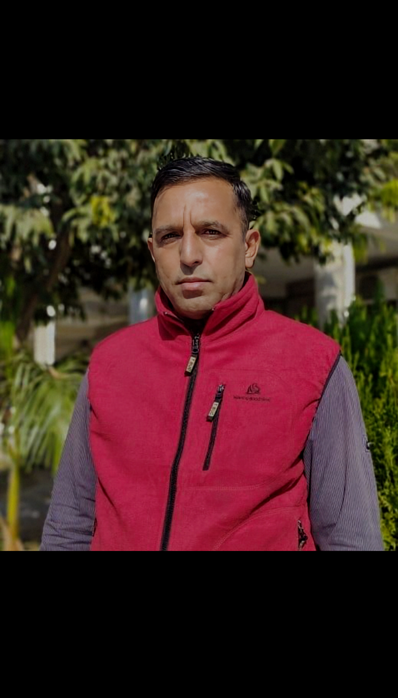
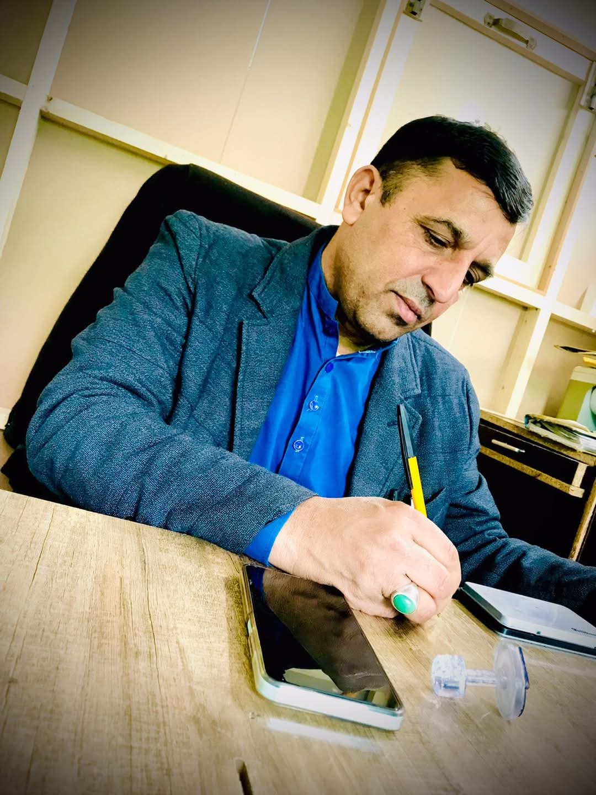

A Story of Courage, Determination, and Love
Born: 30 September 1972
Birthplace: Rawat Radio Colony, Pakistan
Education: Master's Degree in Political Science
Profession: Personal Business Associated with the Islamabad High Court
Syed Shakil Haider Sabazwari was born on 30 September 1972 in Rawat Radio Colony, where he spent his childhood and early adulthood. He completed both his early and higher education in Rawat and later earned a Master's degree in Political Science.
Life presented him with challenges from a very young age. He lost his mother during childhood, a loss that deeply affected his life. Soon afterward, his father remarried. Growing up, he often faced difficulties and lacked the support that many children receive. Financial assistance and guidance were limited, and he had to learn to rely on his own determination and strength.
Despite these hardships, he was blessed with a few loyal friends who became a source of encouragement and happiness during some of the most difficult periods of his life.
He began life with very little support and inherited no financial advantages.
Over the years he tried different professions and business ventures. Many attempts ended in failure, but each setback became a lesson rather than an excuse to quit.
His courage, intelligence, and determination allowed him to keep moving forward when others might have stopped.
Through hard work, smart decisions, and unwavering dedication, he gradually built a respectable career and earned both financial stability and the respect of those around him.
One of the most important chapters of his life began when he got married. At that time, he did not have a stable job, and his wife stood beside him with unwavering support and faith in his potential.
Together, they faced life's challenges and worked through difficult times. With persistence and determination, he eventually achieved success and was able to provide a comfortable and fulfilling life for his family.
Today, he is a proud husband and the loving father of five children—three sons and two daughters. Everything he has done has been driven by his desire to protect, support, and provide for his family.
Syed Shakil Haider Sabazwari is known as a man of knowledge, courage, and determination. He carries himself with confidence and positivity, inspiring those around him through both his words and actions.
He is warm-hearted, caring, and deeply committed to the people he loves. His strong personality and passionate nature sometimes show through his temper, but beneath it lies a kind heart that always wants the best for his family.
His wisdom, experience, and resilience have made him a source of guidance and inspiration for those who know him.
Among his many interests, he has a special love for cars. He enjoys learning about them, discussing them, and appreciating their design and performance.
Above all, his greatest passion is his family. Much of his effort, time, and energy have always been dedicated to creating a better future for the people he loves.


"Dear Baba,
I love you so much. You have always been my hero, my inspiration, and my source of strength.
Your journey teaches me that no obstacle is too great for a determined person.
Every sacrifice you made and every struggle you overcame helped build the life we enjoy today.
Thank you for your love, your guidance, and everything you have done for our family.
You are, and always will be, the best.
With all my love,
Syeda Hoorulain Haider Sabazwari"